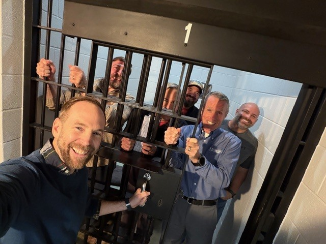
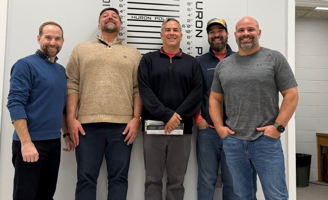
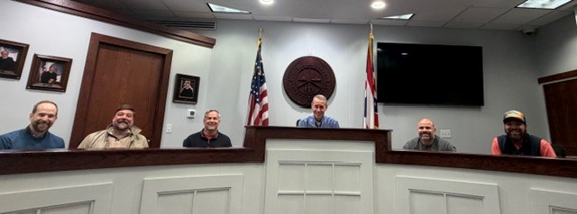

Behind the Scenes: Huron City Hall
November 17, 2026 · Huron, Ohio



From City Hall to the Holding Cell
For our November gathering, the Dudes traded driveways for government buildings and got a behind-the-scenes look at how the City of Huron keeps things running.
Our host for the evening was City Manager Stu Hamilton, who gave us a firsthand look at the people, places, and services that support our community.
First Stop: Council Chambers
We kicked things off in City Council Chambers, where Stu introduced himself and explained how the space serves double duty for both City Council meetings and court proceedings.
That's when we discovered that one of our very own Dudes had actually appeared before the judge many years ago following a certain childhood fireworks incident.
Apparently, some of us have a longer history with City Hall than others.
Next Up: The People Behind the Bills
From there, we visited the finance and utilities offices, where Stu explained the daily interactions city employees have with residents. Whether answering questions, resolving concerns, or collecting overdue payments, these employees demonstrate a level of patience that deserves its own municipal award.
A Visit to the Police Department
Next, Sergeant Orzech welcomed us into the Huron Police Department, walking us through the facility and explaining what a typical shift looks like, how officers serve the community, and how the department operates.
We explored the holding cells, learned about Flock camera technology and its benefits for law enforcement, and even got an up-close look at a police cruiser.
Naturally, we couldn't pass up the opportunity for a few photos behind bars.
For the record, everyone was released without incident.
The Fire Department
Our final official stop was the Huron Fire Department. Although the firefighters were out responding to a call, Stu stepped in as our guide.
He showed us the fire apparatus, explained the department's capabilities, and gave us the opportunity to climb aboard the city's newer ladder truck. We learned why equipment like this is essential for protecting Huron's homes, businesses, and growing community.
One Last Stop: The Old Fish House
As any respectable Dudes in Driveways gathering should, the evening concluded with some good conversation at The Old Fish House, just down the street.
Over drinks and stories, we reflected on growing up in Huron, the adventures we had as kids, and how different the city looks now that we're adults.
There's something pretty special about seeing your hometown from the other side of the counter, the council bench, or even the jail cell.
The Takeaway
What started as a tour turned into a genuine appreciation for the people who keep Huron running. From city administration and utility services to police officers and firefighters, it takes an entire community of dedicated people to make a city work.
A huge thank-you to City Manager Stu Hamilton and Sergeant Orzech for their time, hospitality, and willingness to show us what goes on behind the scenes.
And to our fellow Dude with the fireworks history: we're glad your second visit to City Hall went a little better than the first.